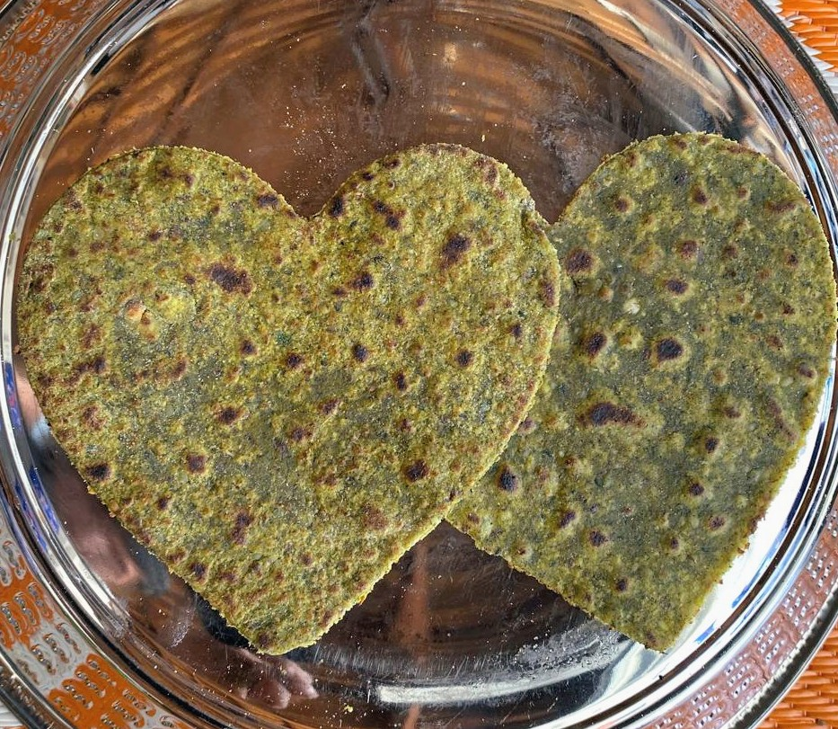

When Love Meets Innovation
In the heart of San Francisco Silicon Valley, two tech moms, Suma and Priyanka, faced the same daily struggle that millions of parents know all too well. Despite their brilliant careers, they felt like they were failing the most important project of their lives — providing their children with the nutrition they needed.
